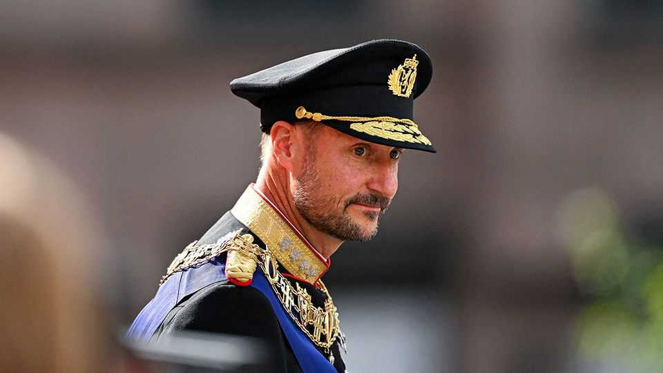

Haakon VIII, Norway’s new king, has a big crown to fill
His father was loved by royalists and republicans alike

Sep 3rd 2026
NORWay is not much for pomp. But when Haakon VIII swore the oath of allegiance before parliament on September 1st, some splendour was in order. The new king arrived in the Lincoln Continental that his father, Harald V, used for his wedding in 1968. Dressed in uniform next to Ingrid Alexandra, the crown princess, Haakon vowed to have the same good relationship with parliament that his father did. MPs sang the Kongesangen, the royal anthem, to the tune of “God Save the King”.
Despite their egalitarian mores, Norwegians broadly support the monarchy. Unusually, it has been endorsed in a referendum: in 1905, after Norway’s union with Sweden dissolved, 79% of voters plumped for a king over a republic. After Harald died on August 28th, aged 89, a poll by Norstat found 72% of Norwegians support having a king.
That is largely to Harald’s credit. Despite his Oxford degree and weakness for sailing yachts, the old king cultivated a regular-Jo air. His wife, Sonja, was the daughter of textile merchants. He praised Norway’s leftist partisans for their role resisting the Nazis, and spoke warmly of refugees. Klassekampen (Class Struggle), a socialist newspaper, put Harald’s obituary on its cover. The headline: “Also the republicans’ king”.
Haakon spent years as regent while his father was ill, but taking over will be tough. His family’s scandals make Britain’s royal peccadilloes seem less remarkable. The new queen, Mette-Marit, was friendly with Jeffrey Epstein long after his conviction for soliciting sex from a child (she has apologised). Her son from a previous relationship was convicted of rape in June. Other royals are merely barmy. Princess Martha Louise, Haakon’s sister, once ran a school that taught students how to talk to angels. Such affairs dragged support for the monarchy to just 60% in February.
Eventually Haakon may face a question his father avoided. As monarchs live longer, more are choosing to abdicate. Margarethe II of Denmark did so in 2024, and Emperor Akihito of Japan in 2019. The last three Dutch monarchs stepped down as they entered old age. But Haakon may balk, as his father did. In 1999 Harald described abdicating as an affront to tradition; he would only go if he went “completely bonkers”.
Parliament is considering letting other royals step in if both monarch and regent are unavailable. The idea is that this will help prevent cock-ups, as in April 2024 when a health minister’s dismissal was delayed because Harald was ill and Haakon was abroad. But the new king is only 53. MPs have plenty of time to deal with such problems. ■